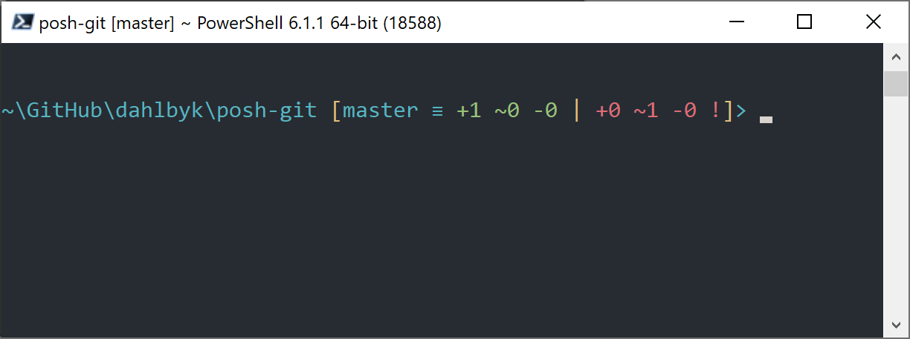

A.8 PowerShell における Git
PowerShell における Git
Windows の古いコマンドライン端末（cmd.exe）には、Git をカスタマイズするための十分な機能はなく、現実には利用できません。
PowerShell を利用しているのであれば安心です。
Linux や macOS 上でも PowerShell Core を実行すれば PowerShell を動作させることができます。
posh-git (https://github.com/dahlbyk/posh-git) というパッケージでは、強力なタブ補完機能が提供されています。
さらに拡張プロンプトによってリポジトリの状態を常に確認できます。
その様子を以下に示します。

図 163. Posh-git を利用した PowerShell
インストール
前提条件 (Windows のみ)
Before you’re able to run PowerShell scripts on your machine, you need to set your local ExecutionPolicy to RemoteSigned (basically, anything except Undefined and Restricted).
If you choose AllSigned instead of RemoteSigned, also local scripts (your own) need to be digitally signed in order to be executed.
With RemoteSigned, only scripts having the ZoneIdentifier set to Internet (were downloaded from the web) need to be signed, others not.
If you’re an administrator and want to set it for all users on that machine, use -Scope LocalMachine.
If you’re a normal user, without administrative rights, you can use -Scope CurrentUser to set it only for you.
PowerShell のスコープ（scope）に関する詳細は https://docs.microsoft.com/en-us/powershell/module/microsoft.powershell.core/about/about_scopes を参照してください。
PowerShell の実行ポリシー（ExecutionPolicy）については https://docs.microsoft.com/en-us/powershell/module/microsoft.powershell.security/set-executionpolicy を参照してください。
全ユーザーに対して ExecutionPolicy の値を RemoteSigned に設定する場合は、以下のコマンドを実行します。
> Set-ExecutionPolicy -Scope LocalMachine -ExecutionPolicy RemoteSigned -ForcePowerShell ギャラリー
If you have at least PowerShell 5 or PowerShell 4 with PackageManagement installed, you can use the package manager to install posh-git for you.
PowerShell ギャラリー（Gallery）に関する詳細は https://docs.microsoft.com/en-us/powershell/scripting/gallery/overview を参照してください。
> Install-Module posh-git -Scope CurrentUser -Force
> Install-Module posh-git -Scope CurrentUser -AllowPrerelease -Force # Newer beta version with PowerShell Core supportIf you want to install posh-git for all users, use -Scope AllUsers instead and execute the command from an elevated PowerShell console.
If the second command fails with an error like Module 'PowerShellGet' was not installed by using Install-Module, you’ll need to run another command first:
> Install-Module PowerShellGet -Force -SkipPublisherCheckThen you can go back and try again. This happens, because the modules that ship with Windows PowerShell are signed with a different publishment certificate.
Update PowerShell Prompt
To include git information in your prompt, the posh-git module needs to be imported.
To have posh-git imported every time PowerShell starts, execute the Add-PoshGitToProfile command which will add the import statement into your $profile script.
This script is executed everytime you open a new PowerShell console.
Keep in mind, that there are multiple $profile scripts.
E. g. one for the console and a separate one for the ISE.
> Import-Module posh-git
> Add-PoshGitToProfile -AllHostsFrom Source
Just download a posh-git release from https://github.com/dahlbyk/posh-git/releases, and uncompress it.
Then import the module using the full path to the posh-git.psd1 file:
> Import-Module <path-to-uncompress-folder>\src\posh-git.psd1
> Add-PoshGitToProfile -AllHostsThis will add the proper line to your profile.ps1 file, and posh-git will be active the next time you open PowerShell.
For a description of the Git status summary information displayed in the prompt see: https://github.com/dahlbyk/posh-git/blob/master/README.md#git-status-summary-information For more details on how to customize your posh-git prompt see: https://github.com/dahlbyk/posh-git/blob/master/README.md#customization-variables.